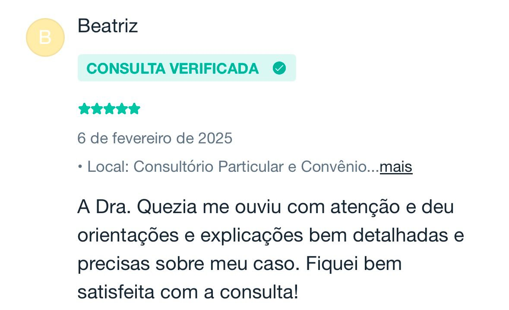
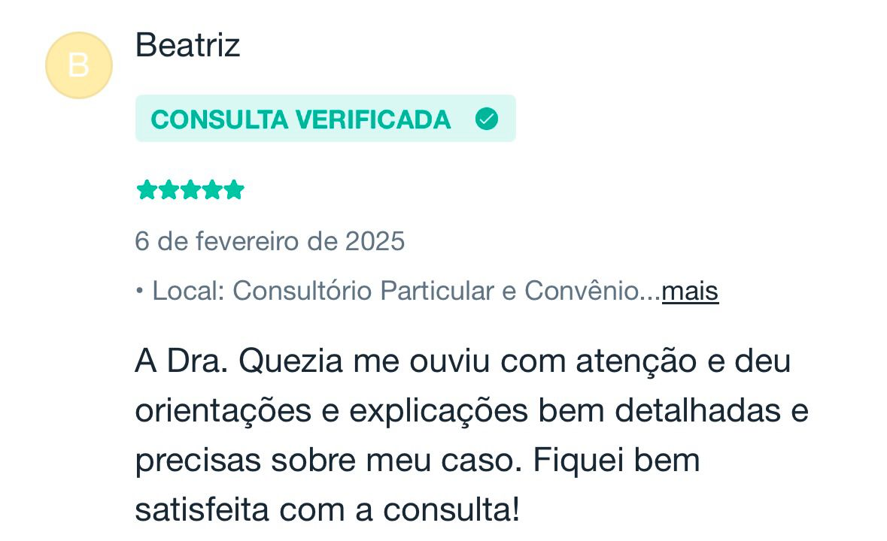
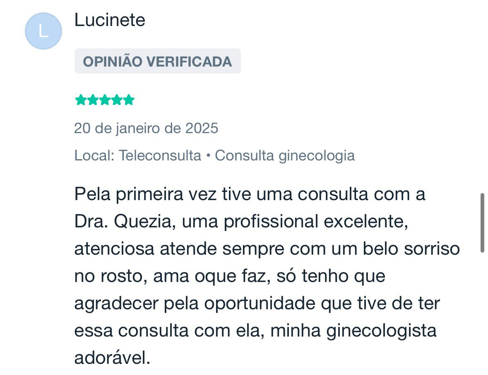
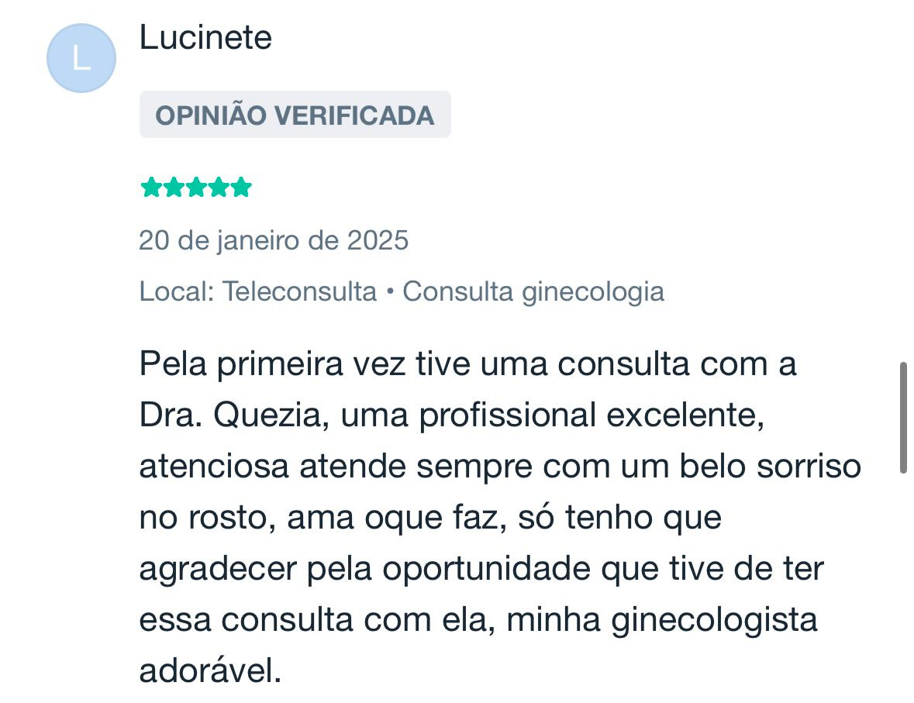

Sobre
Dra. Quezia Prado
Sou a Dra. Quezia, ginecologista e uroginecologista, com formação em Belém-PA e especialização em São Paulo. Minha atuação abrange ginecologia geral, reposição hormonal, envelhecimento saudável, dores pélvicas, planejamento familiar, disfunções do assoalho pélvico e muito mais.
Tenho ampla experiência em cirurgias ginecológicas, além de métodos contraceptivos como DIUs e Implanon. Trato condições como perda urinária, infecções urinárias recorrentes, corrimentos vaginais de repetição, endometriose, miomas, adenomiose, distúrbios hormonais como a síndrome dos ovários policísticos. Planejo com você, uma transição tranquila pelo climatério e menopausa, fazendo a reposição hormonal, quando necessária, e prevenindo todas as condições que podem surgir nesse período.
Meu compromisso é oferecer um atendimento personalizado, promovendo saúde e bem-estar para que cada mulher se sinta bem consigo mesma.
Fiquem à vontade para clicar em um dos assuntos descritos aqui e entenderem um pouco mais sobre cada tema!
Síndrome dos Ovários Policísticos (SOP)
Agendar ConsultaA Síndrome dos Ovários Policísticos (SOP) é uma das principais condições de cunho hormonal que afeta mulheres em idade fértil, podendo ter um impacto significativo na saúde física, reprodutiva e emocional da paciente que lida com a doença.
É caracterizada por um desequilíbrio nos níveis hormonais, levando a uma série de sintomas e complicações se não for diagnosticada e tratada adequadamente.
Classicamente, o quadro clínico será caracterizado por algumas das manifestações abaixo:
- Irregularidade Menstrual: Ciclos menstruais longos ou ausentes, com ovulação irregular.
- Excesso de Andrógenos: Sinais como acne, excesso de pelos ou queda de cabelo excessiva.
- Presença de Cistos Ovarianos: Identificação de múltiplos cistos nos ovários, geralmente por meio de ultrassonografia.
Além de todo prejuízo estético, a doença também carrega diversas consequências hormonais que impactam fortemente na qualidade de vida da paciente, podendo gerar quadros de resistência insulínica (pre diabetes ou até a própria diabetes), infertilidade, e até câncer de endométrio futuramente, caso não tratada devidamente.
A abordagem precisa ser multidisciplinar, com a visão do especialista e a empatia para o cuidado adequado, visando não apenas a resolução de desconfortos presentes, como a prevenção de consequências futuras!
O tratamento vai englobar principalmente mudanças no estilo de vida, com as corretas orientações e definições de metas, mas também pode ser possível a realização de tratamentos medicamentosos, auxílio com terapias psicológicas, avaliação dermatológica, endocrinológica, nutricional e muito mais. E é por isso que a visão do especialista se faz indispensável nesse processo de diagnostico e tratamento da doença!!
Agendar ConsultaFeedbacks

 



 


Contato
Entre em contato para mais informações